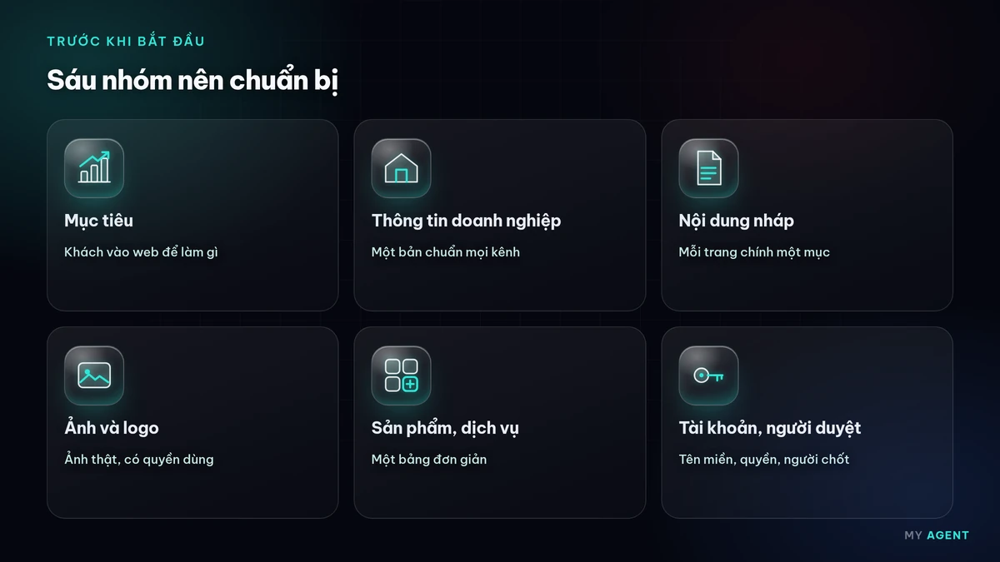
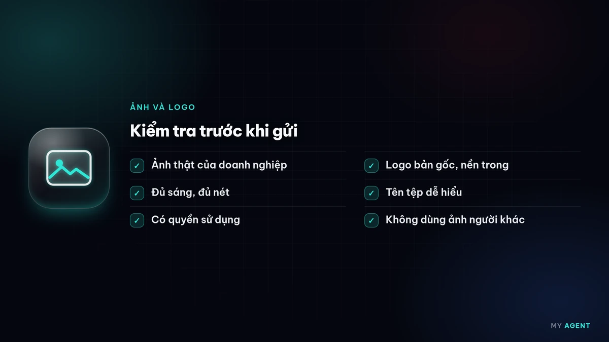
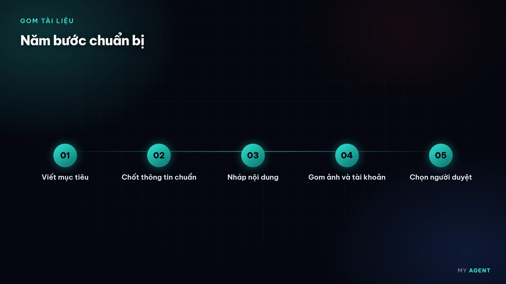

Phần lớn thời gian làm một website giới thiệu không nằm ở khâu dựng trang, mà ở khâu chờ: chờ chữ, chờ ảnh, chờ ai đó nhớ mật khẩu tên miền, chờ người có quyền duyệt. Chuẩn bị trước một bộ tài liệu gọn giúp việc làm web nhanh hơn, ít sửa đi sửa lại, và website ra mắt với thông tin thật thay vì câu tạm. Danh sách dưới đây dùng được cho tiệm bánh, phòng khám nha, xưởng cơ khí, công ty du lịch hay văn phòng tư vấn. Các bước làm web từ trao đổi đến bàn giao nằm ở bài quy trình làm website; bài này chỉ nói phần anh/chị nên có trong tay trước khi bắt đầu.

1. Mục tiêu: website cần làm được việc gì
Viết ra một hai câu, không cần dài:
- Khách vào website để làm gì: gọi điện, nhắn Zalo, gửi yêu cầu báo giá, đặt lịch hay mua hàng.
- Khách chính là ai, đang ở đâu, thường tìm anh/chị bằng chữ gì.
- Việc nào bắt buộc có trong lần này, việc nào để sau.
Mục tiêu rõ giúp chọn đúng số trang và tính năng, tránh làm thừa. Nếu còn phân vân website có cần không khi đã có Facebook hay Zalo, xem bài đã có Facebook, Zalo, sàn thương mại điện tử có cần website riêng.
2. Thông tin doanh nghiệp: một bản chuẩn, dùng ở mọi nơi
Lập một tệp ghi sẵn, kiểm tra kỹ từng chữ:
- Tên doanh nghiệp hoặc tên thương hiệu, viết đúng một kiểu.
- Địa chỉ nếu khách có thể đến, hoặc khu vực phục vụ nếu làm tại nhà khách hay trực tuyến.
- Giờ làm việc, ngày nghỉ.
- Số điện thoại, Zalo, email, Fanpage: đúng tài khoản đang có người trực.
- Người hoặc bộ phận nhận yêu cầu từ form.
Đối chiếu bản này với Facebook, Zalo, trang Google trên bản đồ, biển hiệu và hóa đơn. Chỗ nào lệch thì thống nhất trước khi đưa lên web. Lý do vì sao điều này quan trọng với niềm tin của khách có ở bài trang Giới thiệu và thông tin liên hệ.
3. Bản nháp nội dung cho các trang chính
Không cần viết hay, chỉ cần viết đúng. Người làm web có thể biên tập lại, nhưng không thể đoán thay anh/chị về dịch vụ, cách làm việc hay điều khách hay hỏi. Nên có sẵn bản nháp cho:
- Trang chủ: anh/chị làm gì, cho ai, khác ở điểm nào.
- Từng dịch vụ hoặc nhóm sản phẩm.
- Giới thiệu và liên hệ.
- Năm đến mười câu khách hay hỏi, kèm câu trả lời thật.
Gợi ý mỗi trang nên có gì nằm ở bài nội dung trên website: mỗi trang nên viết gì. Ở bước chuẩn bị, chỉ cần gom ý vào một tệp, mỗi trang một mục; ghi chú rõ chỗ nào còn chưa chắc để trao đổi thêm.
4. Danh sách sản phẩm hoặc dịch vụ
Gom thành một bảng đơn giản, mỗi dòng một sản phẩm hay dịch vụ: tên, mô tả ngắn, ảnh đi kèm, và giá nếu muốn công khai. Nếu đăng giá, ghi rõ giá đã hay chưa bao gồm VAT và cập nhật khi thay đổi. Nếu không đăng giá, ghi cách khách hỏi giá. Bảng này giúp người làm web biết cần trang danh mục, trang chi tiết hay chỉ một trang tổng hợp.
5. Ảnh, logo và quyền sử dụng

- Logo bản gốc, tốt nhất là tệp vector (như SVG, AI, PDF) hoặc ảnh PNG nền trong, kèm màu nhận diện nếu có.
- Ảnh thật của nơi làm việc, sản phẩm, công việc đã làm: chụp đủ sáng, đủ nét, ngang và dọc. Ảnh chụp bằng điện thoại đời mới thường đủ dùng nếu chụp cẩn thận.
- Quyền sử dụng: chỉ đưa ảnh do mình chụp, do bên khác chụp đã đồng ý cho dùng, hoặc ảnh có giấy phép rõ ràng. Ảnh có khách hàng hay nhân viên cần được họ đồng ý.
- Không dùng ảnh của người khác như thể là của mình, kể cả ảnh tải từ mạng hay từ website đối thủ.
- Đặt tên tệp dễ hiểu và chia thư mục theo trang, để không lẫn ảnh.
Chưa có ảnh đẹp thì cứ bắt đầu với ảnh thật đang có; ảnh ít nhưng đúng vẫn tốt hơn ảnh nhiều mà gây hiểu nhầm. Việc nén ảnh cho trang nhẹ là phần người làm web xử lý, xem thêm ở bài tốc độ website cơ bản.
6. Tên miền và các tài khoản đang có
Liệt kê những gì đã có và ai đang giữ:
- Tên miền: đã mua chưa, đứng tên ai, mua ở đâu, khi nào hết hạn.
- Hosting và website cũ nếu có: còn đăng nhập được không. Nếu đang có website cũ, bài khi nào nên làm mới website cũ nêu những gì cần giữ lại.
- Email theo tên miền, Google Business Profile, Search Console, Google Analytics, Fanpage, Zalo OA.
Không gửi mật khẩu qua tin nhắn hay email thông thường. Khi cần, nên cấp quyền quản trị cho bên làm web bằng tính năng chia sẻ quyền của từng dịch vụ, và thu hồi sau khi xong. Chưa có tên miền thì xem bài chọn tên miền và hosting.
7. Website tham khảo và người duyệt
- Hai đến ba website tham khảo, ghi rõ thích điểm gì: bố cục, màu, cách trình bày dịch vụ, cách đặt nút liên hệ. Tham khảo để hiểu ý, không sao chép chữ hay ảnh.
- Một người chốt cuối cùng. Nếu nhiều người cùng góp ý, nên gom ý về một người rồi mới gửi đi, để tránh sửa vòng quanh. Hẹn trước thời gian phản hồi cho mỗi lần duyệt.

Chưa đủ hết thì có bắt đầu được không
Được. Mục tiêu, thông tin doanh nghiệp chuẩn và quyền với tên miền là ba thứ nên có sớm nhất. Nội dung và ảnh có thể bổ sung dần, miễn là ghi rõ phần nào còn thiếu để không đưa câu tạm lên bản chính thức. Những hạng mục thường có trong một gói làm web nằm ở bài thiết kế web trọn gói gồm những gì.
My Agent hỗ trợ gì
Khi nhận thiết kế website, My Agent gửi khách một danh sách chuẩn bị như trên và cùng rà lại phần còn thiếu trước khi dựng trang. Nếu cần soạn hồ sơ giới thiệu, có thể xem hồ sơ doanh nghiệp; nếu chưa có tên miền, xem tên miền. Chúng tôi phản hồi trong giờ làm việc; nếu muốn trao đổi, hãy liên hệ. Giá tham khảo, chưa bao gồm VAT, nằm tại bảng giá.
Câu hỏi thường gặp
Chưa có nội dung, có nhờ bên làm web viết được không?
Thường là được, tùy phạm vi đã thỏa thuận. Dù vậy anh/chị vẫn cần cung cấp thông tin thật về dịch vụ, cách làm việc và điều khách hay hỏi, rồi đọc duyệt lại, vì chỉ anh/chị biết đúng việc kinh doanh của mình.
Không có ảnh chuyên nghiệp thì làm sao?
Dùng ảnh thật chụp cẩn thận bằng điện thoại: đủ sáng, đủ nét, gọn khung. Có thể bổ sung ảnh đẹp hơn sau. Không thay bằng ảnh lấy từ nơi khác rồi để như thể là của mình.
Có cần đưa mật khẩu tên miền và hosting cho bên làm web không?
Nên hạn chế. Ưu tiên cấp quyền quản trị phụ hoặc chia sẻ quyền theo tính năng của từng dịch vụ, và giữ tài khoản chính đứng tên doanh nghiệp. Sau khi bàn giao, đổi mật khẩu hoặc thu hồi quyền không còn cần.
Bao nhiêu website tham khảo là đủ?
Hai đến ba trang là đủ để người làm web hiểu ý. Quan trọng hơn số lượng là ghi rõ thích điểm gì ở từng trang.
Từ khóa: chuẩn bị làm website · nội dung website · hình ảnh · doanh nghiệp nhỏ